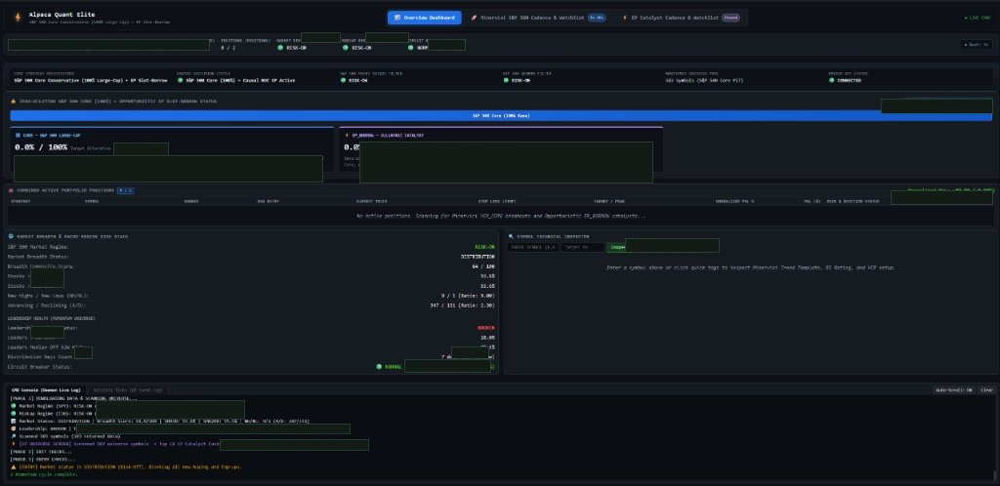

Alpaca — 美股事件驅動量化交易與無偏誤回測系統
以 Go (Golang) 與 Wails v2 打造的免外部環境依賴美股自動化交易與無偏誤回測系統，核心解決大規模歷史時序資料的因果隔離（杜絕資料洩漏）、跨時區交易排程狀態機，以及網路中斷時的遠端委託單硬性風控。系統結合 Point-In-Time (PIT) 歷史動態成分股資料庫、雙引擎市場狀態路由與 Alpaca API 伺服器端條件停損，實現從盤前掃描、部位計算到自動下單的端到端（End-to-End）閉環執行。
1. 系統架構、跨時區排程與實測效能
- 獨立高併發執行檔與 Wails v2 原生桌面架構 編譯為免外部環境依賴的獨立原生執行檔，結合 Wails v2 實盤桌面監控端（內建 SSE 即時執行日誌與大盤狀態燈號串流）與獨立 CLI 回測引擎，直接對接 Alpaca Markets API 完成盤前特徵掃描、自適應盤中輪詢與自動化委託單派發。
- 高速本地歷史快取、實測效能與回測／實盤 100% 決定性對齊 建構本地端多年期美股歷史行情快取與 GICS 產業中繼資料，單次盤前掃描 500+ 檔成分股特徵與排序僅需 < 15 ms，十年期完整事件驅動回測於 3.0 秒內完成；單一編譯執行檔體積僅約 17 MB，無需 Python 或外部資料庫環境即可部署，並透過穩定確定性排序（sort.SliceStable）確保回測與實盤訊號 100% 一致。
- 美股交易日曆／夏令時間對齊與委託單狀態冪等容錯 針對美股非 24 小時連續交易特性，內建 NYSE 開休市日曆、提前收盤日與美東夏令／冬令時間（EDT/EST）自動對齊狀態機；結合 API 斷線指數退避重試、交易狀態原子持久化與委託單冪等性檢查，確保跨日與網路波動時絕不發生重複下單或漏單。
2. 雙引擎策略框架、PIT 因果隔離與統計壓力驗證
- 雙引擎市場狀態路由與多因子動能／事件驅動模型 整合趨勢樣板過濾與橫斷面動能排序、波動度收斂型態（VCP）結構偵測以及事件驅動跳空動能（Episodic Pivots），由具遲滯防震（Hysteresis）的大盤宏觀狀態機跨大型股核心與中型股衛星雙引擎調度，並透過流動性下限與 GICS 產業集中度閘門篩選標的。
- S&P 500 逐日歷史成分股矩陣（PIT Data Hygiene） 建構 S&P 500 逐日歷史成分股矩陣，於每次再平衡與掃描時嚴格執行因果時間點隔離（Causal Point-In-Time Filtering），確保在實際納入指數日前一律排除未來成分股，從資料底層杜絕倖存者偏誤與前視偏誤。
- Circular 與 Stationary Block Bootstrap（Politis-Romano）暨 Walk-Forward 驗證 結合依市場狀態分層的 Circular Block Bootstrap 蒙地卡羅模擬、具備幾何隨機區塊長度的 Stationary Block Bootstrap（Politis-Romano，完整保留日報酬波動叢聚特性）以及 Walk-Forward 滾動式樣本外參數驗證，嚴謹量化跨牛熊週期的尾端風險與回撤分佈以校準熔斷水位。
- 真實交易摩擦、跳空滑價與隔夜融資計息建模 回測引擎內建美股交易規費、動態成交滑價、跳空穿價停損滑價懲罰以及 Actual/360 隔夜融資複利計息模型，確保模擬淨值曲線貼近真實券商交割環境。
3. 遠端委託單硬性風控託管與部位管理
- Broker Server-Side Hard Stop（PATCH 同步輪詢確認委託單狀態轉移） 主委託單成交當下即同步向 Alpaca 伺服器掛出條件停損單；執行分批減碼或停損上移時，透過原子化 PATCH 請求搭配同步輪詢確認委託單狀態轉移（等待脫離 pending_replace 並釋放 held_for_orders 鎖定），確保即使本機電腦關機、斷網或程式崩潰，停損單仍持續留在券商伺服器端執行硬性保護。
- 波動度自適應倉位、集中度削峰與雙層 HWM 帳戶熔斷 依據個股近期真實波動度與停損距離動態反推下單股數，結合單一持倉集中度自動削峰、產業上限、試單轉金字塔加碼機制，以及經 Bootstrap 尾端風險校準之單日虧損與雙層帳戶淨值高水位（HWM）階梯熔斷器（軟減速去槓桿與硬熔斷平倉鎖機）。
註：本頁僅展示系統工程架構、無偏誤回測方法論與風險控管設計；具體訊號門檻、核心參數與實盤／回測績效數據均予隱藏以保護策略 Alpha。
系統架構（離線 PIT／Bootstrap 驗證與實盤閉環分離）
本地多年期 OHLCV 與 PIT／GICS 資料庫
作為離線研發與盤前掃描的統一資料底座，將多年期美股日 K 線（OHLCV）、S&P 500 歷史逐日成分股異動紀錄與 GICS 產業／子產業分類整合為高速本地快取，免除外部資料庫依賴並消除重複 API 拉取延遲。
- 紐約交易日快取鍵控：依美東交易日自動管理增量更新與離線快取命中，避免跨時區換日誤判。
- 歷史已剔除與下市標的保留：完整保留曾納入指數但後續遭剔除、併購或下市之歷史標的 K 線，確保回測母體完整。
- GICS 產業與異常拆股防護：內建產業分類映射與未調整拆股價格跳變偵測，防止髒資料污染動能排序。
PIT 因果隔離引擎與決定性排序
解決美股量化回測最致命的「未來飆股偷看（Look-Ahead）」與「倖存者偏誤（Survivorship Bias）」。引擎在任一歷史交易日嚴格只開放當日已公開存在於指數內的成分股參與評分，並保證回測與實盤產出 100% 相同的排序結果。
- 逐日成分股時間鎖（Causal Gate）：未來才納入指數的強勢股在實際生效日前一律隔離於候選池與相對強度分母之外。
- 決定性平手裁決排序：採用 sort.SliceStable 搭配股票代號字典序裁決，徹底消除 Go map 隨機迭代順序造成的訊號漂移。
- 極速橫斷面掃描與十年回測：單次完成 500+ 檔成分股特徵計算與確定性排名僅需 < 15 ms，十年期完整事件驅動模擬於 3.0 秒內跑完。
Walk-Forward 與 Politis-Romano 壓測
捨棄易過度擬合的單一全樣本回測，透過多期滾動樣本外推進與保留波動叢聚特性的序列重抽樣模擬，量化策略在跨牛熊週期與黑天鵝連跌期間的最大回撤分佈，據此科學化設定實盤帳戶熔斷水位。
- Stationary Block Bootstrap（Politis-Romano）：以幾何分佈隨機區塊長度重抽樣日報酬序列，保留真實市場連跌與波動叢聚結構，避免固定區塊邊界失真。
- Circular Block Bootstrap 蒙地卡羅：依市場狀態分層執行數千條多年期路徑模擬，嚴謹量化極端尾端回撤分佈區間。
- 真實摩擦與隔夜融資計息：完整計入交易規費、跳空穿價停損滑價與 Actual/360 隔夜融資複利計息，校準後之風控參數再注入實盤。
Alpaca 行情與 NYSE 日曆狀態機
針對美股「非 24 小時連續交易、具開休市與冬夏令切換」的特性，封裝直連 Alpaca 原生 API 的通訊與排程閘門，精準協調盤前掃描、盤中自適應輪詢與收盤前尾盤確認視窗。
- NYSE 假日與提前收盤感知：串接 Alpaca Clock API 自動識別感恩節休市與半日市提前收盤等特殊時段，休市期間自動靜默待機不誤觸發。
- 美東夏令／冬令（EDT/EST）自動對齊：所有排程與日線快取鍵統一錨定紐約時間，徹底消除夏冬令切換造成的排程偏移。
- 自適應頻率控制與指數退避：依催化劑接近程度動態調節輪詢頻率（API 消耗 < 1%），網路波動時自動指數退避重試。
雙引擎市場狀態路由與多因子漏斗
實盤進場前的多層次宏觀與個股過濾中樞：先由大盤長期趨勢遲滯狀態機與市場廣度派發日門控決定是否開放風險敞口，再將資金動態路由至趨勢突破主引擎與事件驅動催化劑通道。
- 遲滯防洗盤大盤狀態機（Hysteresis Gate）：透過雙門檻與連續確認緩衝避免均線邊緣假切換；基準資料缺漏或過期時自動進入 FAIL-CLOSED (HOLD)。
- 市場廣度與派發日封鎖門控：即時統計全市場均線廣度、新高新低比與指數派發日，一旦判定處於派發期即全面凍結新買單。
- 零稀釋雙通道協同路由：整合橫斷面動能領漲股突破與尾盤確認之事件驅動跳空（EP），並支援獲利事件倉原地升級為主倉位。
波動度倉位、HWM 熔斷與 PATCH 同步
負責將交易訊號轉化為精確且具備競態防護的委託指令：統一控管單筆風險暴露、單一持倉集中度削峰與雙層帳戶淨值熔斷，並解決券商 API 減碼與改價時的股票鎖倉競態問題。
- 波動度自適應倉位與集中度削峰：依波動幅度與停損距離反推整股股數，並對過度膨脹之獲利單一持倉自動執行削峰減碼以控制集中度。
- 雙層階梯式 HWM 帳戶熔斷器：第一層軟減速線強制降回純現金運作而不誤砍趨勢倉；第二層硬熔斷線經連續確認後執行緊急全平倉鎖機。
- 原子化 PATCH 與輪詢解鎖：減碼或上移停損時先透過 PATCH 修改既有停損單並同步輪詢確認狀態轉移，徹底規避 Alpaca held_for_orders 鎖股失敗。
委託單自動派發與伺服器端硬停損
系統的最後一道物理防線：確保每一筆實盤持倉在成交當下即具備託管於 Alpaca 券商機房的伺服器端條件停損單，使風控保護完全獨立於本地電腦硬體與網路連線之外。
- 斷網／關機持續保護：條件停損單直接託管於 Alpaca 券商伺服器端，即使本機電腦關機、斷電、斷網或程式崩潰，硬性停損依然在遠端生效。
- 限價緩衝執行防護：進場委託採用具上限緩衝之限價單取代無保護市價單，防範瞬間流動性真空導致的極端成交滑價。
- 原子持久化與重啟對帳：每次倉位、停損單號與高水位異動皆原子寫入本地狀態檔，程式重啟後自動與券商 API 對帳恢復一致狀態。
Wails v2 原生桌面監控終端（SSE 串流）
將背景量化守護進程、技術指標檢視器與即時執行日誌封裝進體積僅約 17 MB 的 Wails v2 原生 Windows 桌面應用程式，讓操作者無需開啟終端機或安裝任何開發環境即可一目了然掌握系統脈動。
- SSE 低延遲即時日誌廣播：攔截核心引擎標準輸出並透過 Server-Sent Events 即時推送至前端主控台視窗，同時按日自動輪轉寫入本地稽核日誌檔。
- 宏觀體制與熔斷燈號視覺化：即時顯示大盤與中型股體制燈號、市場廣度評分、雙通道槽位利用率與雙層熔斷狀態。
- 單機免外部依賴部署（~17 MB）：前後端資源完整內嵌編譯為單一原生執行檔，雙擊即可啟動完整守護排程與視覺化監控面板。
Wails v2 原生桌面監控實況（已脫敏）
